Candidate List 20260224 Previous Day Next Day Section 1: New Sources (age<1d) Cosmological Afterglow
Section 2: Old (1-5d) sources observed last night placeholder
Section 1: New Afterglow/FBOT Cands Last Night (8)
1. ZTF26aahnmlt (Afterglow?) [Back to Top] [Share] [Trigger Swift] [Fritz ] [Lasair ]RA, Dec: 124.87658, 1.87168 8h19m30.38s, 1d52m18.06sGalactic (l, b): 221.63163, 20.38684 ext(g-r) = 0.04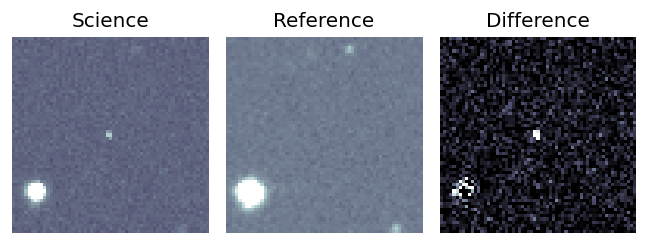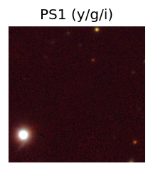 LegacySurvey: 1 sources in 3 arcsec Closest: d = 4.08 arcsec, 324.4 deg (east of north) photoz=0.9 (68% bounds 0.73, 1.07), type=PSF peak abs mag = -27.44 (68% bounds -26.88, -27.89) Consistent with synchrotron, g-r>0!
2. ZTF26aahpiyv (Afterglow?) [Back to Top] [Share] [Trigger Swift] [Fritz ] [Lasair ]RA, Dec: 165.03994, -12.93992 11h 0m9.59s, -12d-56m-23.70sGalactic (l, b): 265.41232, 41.68448 ext(g-r) = 0.036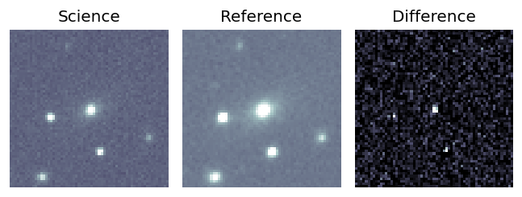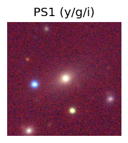 PS1: 1 source in 3 arcsec Closest: d = 0.54 arcsec photoz=0.12+/-0.01 peak abs mag = -19.28 Consistent with synchrotron, g-r>0!
3. ZTF26aahpovy (Afterglow?) [Back to Top] [Share] [Trigger Swift] [Fritz ] [Lasair ]RA, Dec: 106.79155, -1.96131 7h 7m9.97s, -1d-57m-40.71sGalactic (l, b): 216.47353, 2.60144 ext(g-r) = 0.44 Consistent with synchrotron, g-r>0!
4. ZTF26aahraox (Afterglow?) [Back to Top] [Share] [Trigger Swift] [Fritz ] [Lasair ]RA, Dec: 114.67999, 23.55667 7h38m43.20s, 23d33m24.00sGalactic (l, b): 196.18006, 20.44785 WARNING: 2.03 deg from ecliptic plane ext(g-r) = 0.041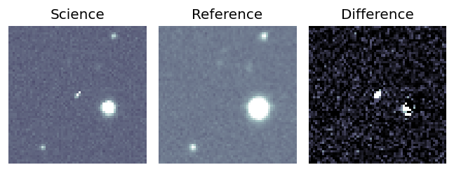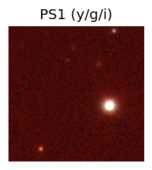 Consistent with synchrotron, g-r>0!
5. ZTF26aahrjyo (Afterglow?) [Back to Top] [Share] [Trigger Swift] [Fritz ] [Lasair ]RA, Dec: 135.06794, 10.67684 9h 0m16.30s, 10d40m36.63sGalactic (l, b): 218.01404, 33.4104 ext(g-r) = 0.034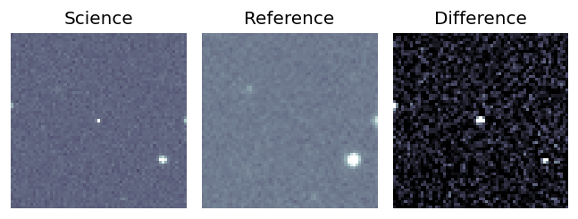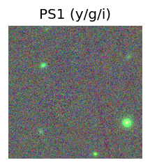 Consistent with synchrotron, g-r>0!
6. ZTF26aahrlss (Afterglow?) [Back to Top] [Share] [Trigger Swift] [Fritz ] [Lasair ]RA, Dec: 153.2598, 24.69903 10h13m2.35s, 24d41m56.52sGalactic (l, b): 207.73392, 54.44411 ext(g-r) = 0.032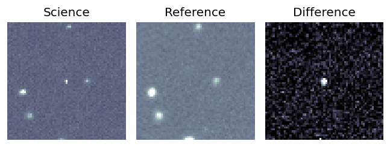LegacySurvey: 1 sources in 3 arcsec Closest: d = 1.89 arcsec, 44.0 deg (east of north) photoz=0.8 (68% bounds 0.53, 1.04), type=PSF peak abs mag = -24.35 (68% bounds -23.24, -25.05) Consistent with synchrotron, g-r>0!
7. ZTF26aahrpiz (Afterglow?) [Back to Top] [Share] [Trigger Swift] [Fritz ] [Lasair ]RA, Dec: 127.36818, 18.58119 8h29m28.36s, 18d34m52.29sGalactic (l, b): 206.03673, 29.68613 WARNING: -0.42 deg from ecliptic plane ext(g-r) = 0.042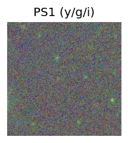 LegacySurvey: 1 sources in 3 arcsec Closest: d = 3.37 arcsec, 94.2 deg (east of north) photoz=0.68 (68% bounds 0.5, 0.87), type=REX peak abs mag = -23.92 (68% bounds -23.15, -24.59) Consistent with synchrotron, g-r>0!
8. ZTF26aahslje (Afterglow?) [Back to Top] [Share] [Trigger Swift] [Fritz ] [Lasair ]RA, Dec: 151.85782, 10.81401 10h 7m25.88s, 10d48m50.43sGalactic (l, b): 227.79581, 48.18402 WARNING: -0.7 deg from ecliptic plane ext(g-r) = 0.045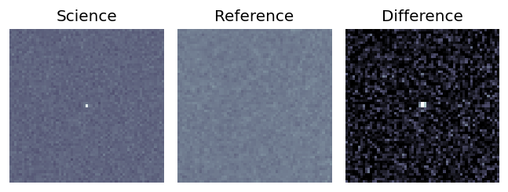peak abs mag = -22.19 LegacySurvey: 1 sources in 3 arcsec Closest: d = 7.85 arcsec, 149.3 deg (east of north) photoz=0.51 (68% bounds 0.45, 0.57), type=REX peak abs mag = -22.72 (68% bounds -22.37, -22.99) Consistent with synchrotron, g-r>0!
Section 2: Older Sources Observed Last Night (26)
0. ZTF26aahboup (Afterglow?FBOT?) [Back to Top] [Share] [Trigger Swift] [Fritz ] [Lasair ]RA, Dec: 133.84832, 39.42391 8h55m23.60s, 39d25m26.08sGalactic (l, b): 182.83427, 40.05641 ext(g-r) = 0.025LegacySurvey: 1 sources in 3 arcsec Closest: d = 2.24 arcsec, 260.8 deg (east of north) photoz=0.15 (68% bounds 0.04, 0.4), type=EXP peak abs mag = -19.85 (68% bounds -16.81, -22.24) Consistent with synchrotron, g-r>0!
1. ZTF26aahcbch (FBOT?) [Back to Top] [Share] [Trigger Swift] [Fritz ] [Lasair ]RA, Dec: 87.71142, 36.37969 5h50m50.74s, 36d22m46.88sGalactic (l, b): 174.17738, 4.77362 ext(g-r) = 0.671PS1: 1 source in 3 arcsec Closest: d = 0.60 arcsec photoz=1.15+/-0.19 peak abs mag = -28.46
2. ZTF26aahcjjs (Afterglow?) [Back to Top] [Share] [Trigger Swift] [Fritz ] [Lasair ]RA, Dec: 152.77269, 0.61697 10h11m5.44s, 0d37m1.09sGalactic (l, b): 240.71526, 43.29648 ext(g-r) = 0.035peak abs mag = -18.01 LegacySurvey: 1 sources in 3 arcsec Closest: d = 1.30 arcsec, 63.4 deg (east of north) photoz=0.9 (68% bounds 0.37, 1.63), type=EXP peak abs mag = -24.39 (68% bounds -22.06, -25.97) Consistent with synchrotron, g-r>0!
3. ZTF26aahclan (Afterglow?FBOT?) [Back to Top] [Share] [Trigger Swift] [Fritz ] [Lasair ]RA, Dec: 154.15111, -10.13429 10h16m36.27s, -10d-8m-3.44sGalactic (l, b): 252.39909, 37.11552 ext(g-r) = 0.055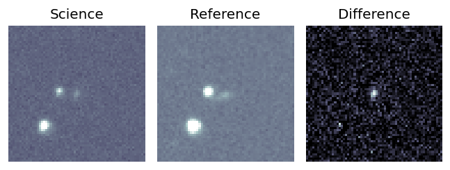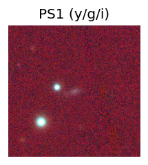 PS1: 1 source in 3 arcsec Closest: d = 0.81 arcsec photoz=0.11+/-0.05 peak abs mag = -19.73 Consistent with synchrotron, g-r>0!
4. ZTF26aahcufr (Afterglow?FBOT?) [Back to Top] [Share] [Trigger Swift] [Fritz ] [Lasair ]RA, Dec: 200.8118, 80.23543 13h23m14.83s, 80d14m7.55sGalactic (l, b): 121.25298, 36.7889 ext(g-r) = 0.034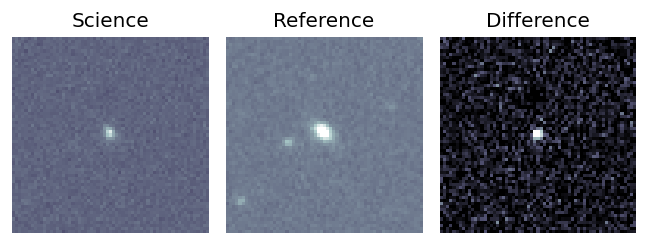LegacySurvey: 1 sources in 3 arcsec Closest: d = 0.98 arcsec, 19.1 deg (east of north) photoz=0.1 (68% bounds 0.09, 0.11), type=SER peak abs mag = -19.65 (68% bounds -19.47, -19.8)
5. ZTF26aahfvci (Afterglow?) [Back to Top] [Share] [Trigger Swift] [Fritz ] [Lasair ]RA, Dec: 153.59857, 40.72348 10h14m23.66s, 40d43m24.55sGalactic (l, b): 179.79774, 55.05766 ext(g-r) = 0.019peak abs mag = -19.05 LegacySurvey: 1 sources in 3 arcsec Closest: d = 3.33 arcsec, 33.7 deg (east of north) photoz=0.07 (68% bounds 0.05, 0.08), type=SER peak abs mag = -18.27 (68% bounds -17.47, -18.78)
6. ZTF26aahgbbn (FBOT?) [Back to Top] [Share] [Trigger Swift] [Fritz ] [Lasair ]RA, Dec: 151.32246, 22.39842 10h 5m17.39s, 22d23m54.31sGalactic (l, b): 210.73127, 52.15486 ext(g-r) = 0.044peak abs mag = -21.16 LegacySurvey: 1 sources in 3 arcsec Closest: d = 0.14 arcsec, 187.7 deg (east of north) photoz=0.23 (68% bounds 0.14, 0.29), type=REX peak abs mag = -21.77 (68% bounds -20.59, -22.36)
7. ZTF26aahggmj (Afterglow?) [Back to Top] [Share] [Trigger Swift] [Fritz ] [Lasair ]RA, Dec: 153.54961, 54.45984 10h14m11.91s, 54d27m35.41sGalactic (l, b): 158.28284, 50.47162 ext(g-r) = 0.01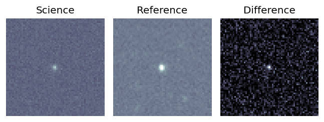peak abs mag = -19.70 LegacySurvey: 1 sources in 3 arcsec Closest: d = 0.33 arcsec, 135.2 deg (east of north) photoz=0.12 (68% bounds 0.08, 0.14), type=REX peak abs mag = -18.79 (68% bounds -17.96, -19.18)
8. ZTF26aahghmu (FBOT?) [Back to Top] [Share] [Trigger Swift] [Fritz ] [Lasair ]RA, Dec: 159.70974, 29.15039 10h38m50.34s, 29d 9m1.41sGalactic (l, b): 201.09395, 60.79422 ext(g-r) = 0.028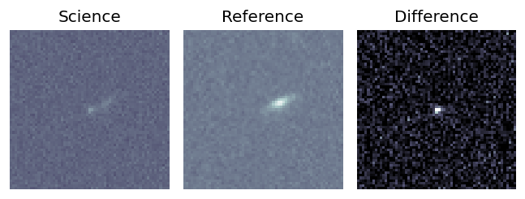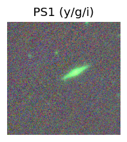 peak abs mag = -19.29 LegacySurvey: 1 sources in 3 arcsec Closest: d = 0.56 arcsec, 270.4 deg (east of north) photoz=0.37 (68% bounds 0.25, 0.52), type=EXP peak abs mag = -21.94 (68% bounds -20.99, -22.86)
9. ZTF26aahigll (FBOT?) [Back to Top] [Share] [Trigger Swift] [Fritz ] [Lasair ]RA, Dec: 186.08675, 2.6073 12h24m20.82s, 2d36m26.26sGalactic (l, b): 286.96871, 64.6361 WARNING: 4.81 deg from ecliptic plane ext(g-r) = 0.02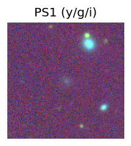 peak abs mag = -23.77 LegacySurvey: 1 sources in 3 arcsec Closest: d = 1.04 arcsec, 197.1 deg (east of north) photoz=0.15 (68% bounds 0.08, 0.22), type=EXP peak abs mag = -20.17 (68% bounds -18.76, -21.1) Consistent with synchrotron, g-r>0!
10. ZTF26aahiuxq (Afterglow?) [Back to Top] [Share] [Trigger Swift] [Fritz ] [Lasair ]RA, Dec: 176.45188, 5.33615 11h45m48.45s, 5d20m10.13sGalactic (l, b): 264.36697, 63.18283 WARNING: 3.49 deg from ecliptic plane ext(g-r) = 0.024peak abs mag = -18.76 LegacySurvey: 1 sources in 3 arcsec Closest: d = 4.96 arcsec, 17.2 deg (east of north) photoz=0.24 (68% bounds 0.02, 1.07), type=PSF peak abs mag = -20.43 (68% bounds -15.16, -24.27) Consistent with synchrotron, g-r>0!
11. ZTF26aahixfn (Afterglow?FBOT?) [Back to Top] [Share] [Trigger Swift] [Fritz ] [Lasair ]RA, Dec: 172.7169, 20.28023 11h30m52.06s, 20d16m48.84sGalactic (l, b): 229.00642, 70.35733 ext(g-r) = 0.023LegacySurvey: 1 sources in 3 arcsec Closest: d = 0.19 arcsec, 226.9 deg (east of north) photoz=0.76 (68% bounds 0.48, 1.05), type=REX peak abs mag = -23.38 (68% bounds -22.16, -24.22) Consistent with synchrotron, g-r>0!
12. ZTF26aahjdpb (FBOT?) [Back to Top] [Share] [Trigger Swift] [Fritz ] [Lasair ]RA, Dec: 174.75084, -5.71504 11h39m0.20s, -5d-42m-54.14sGalactic (l, b): 272.18317, 52.77765 ext(g-r) = 0.045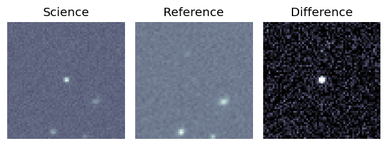LegacySurvey: 1 sources in 3 arcsec Closest: d = 0.27 arcsec, 204.6 deg (east of north) photoz=0.47 (68% bounds 0.27, 0.63), type=REX peak abs mag = -23.54 (68% bounds -22.16, -24.31) Consistent with synchrotron, g-r>0!
13. ZTF26aahjdzc (FBOT?) [Back to Top] [Share] [Trigger Swift] [Fritz ] [Lasair ]RA, Dec: 168.38155, 32.81993 11h13m31.57s, 32d49m11.74sGalactic (l, b): 191.93859, 68.10166 ext(g-r) = 0.025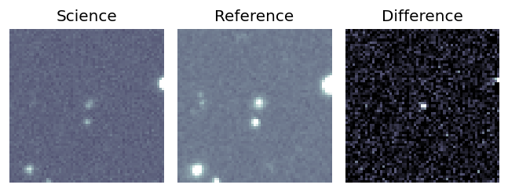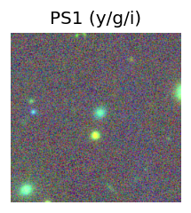 peak abs mag = -19.20 LegacySurvey: 1 sources in 3 arcsec Closest: d = 1.78 arcsec, 315.2 deg (east of north) photoz=0.19 (68% bounds 0.15, 0.21), type=REX peak abs mag = -20.02 (68% bounds -19.48, -20.31)
14. ZTF26aahjltp (Afterglow?FBOT?) [Back to Top] [Share] [Trigger Swift] [Fritz ] [Lasair ]RA, Dec: 186.49313, 11.91944 12h25m58.35s, 11d55m9.97sGalactic (l, b): 280.24939, 73.65939 ext(g-r) = 0.028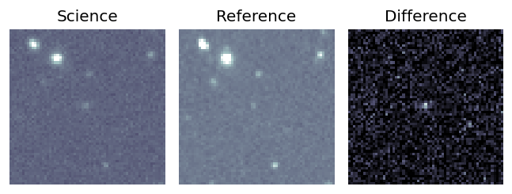peak abs mag = -21.31 LegacySurvey: 1 sources in 3 arcsec Closest: d = 0.84 arcsec, 71.5 deg (east of north) photoz=0.44 (68% bounds 0.25, 0.6), type=EXP peak abs mag = -20.63 (68% bounds -19.26, -21.46) Consistent with synchrotron, g-r>0!
15. ZTF26aahjpbx (FBOT?) [Back to Top] [Share] [Trigger Swift] [Fritz ] [Lasair ]RA, Dec: 187.70773, 8.27395 12h30m49.86s, 8d16m26.23sGalactic (l, b): 287.47436, 70.52476 ext(g-r) = 0.023peak abs mag = -20.57 LegacySurvey: 1 sources in 3 arcsec Closest: d = 0.41 arcsec, 151.4 deg (east of north) photoz=0.27 (68% bounds 0.2, 0.39), type=REX peak abs mag = -20.33 (68% bounds -19.57, -21.19)
16. ZTF26aahjslj (Afterglow?) [Back to Top] [Share] [Trigger Swift] [Fritz ] [Lasair ]RA, Dec: 185.38042, 12.51988 12h21m31.30s, 12d31m11.57sGalactic (l, b): 275.84219, 73.79735 ext(g-r) = 0.043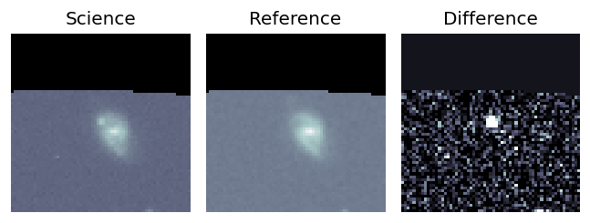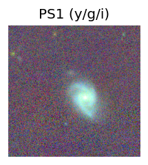 LegacySurvey: 1 sources in 3 arcsec Closest: d = 5.99 arcsec, 230.2 deg (east of north) photoz=0.06 (68% bounds 0.05, 0.06), type=SER peak abs mag = -17.55 (68% bounds -17.2, -17.83) Consistent with synchrotron, g-r>0!
17. ZTF26aahkghk (Afterglow?FBOT?) [Back to Top] [Share] [Trigger Swift] [Fritz ] [Lasair ]RA, Dec: 267.66736, 51.41165 17h50m40.17s, 51d24m41.92sGalactic (l, b): 78.83144, 30.12493 ext(g-r) = 0.043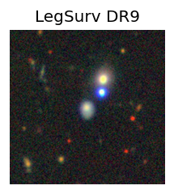 peak abs mag = -19.86 LegacySurvey: 1 sources in 3 arcsec Closest: d = 0.72 arcsec, 165.3 deg (east of north) photoz=0.13 (68% bounds 0.11, 0.15), type=SER peak abs mag = -19.67 (68% bounds -19.22, -19.95) Consistent with synchrotron, g-r>0!
18. ZTF26aahmuul (FBOT?) [Back to Top] [Share] [Trigger Swift] [Fritz ] [Lasair ]RA, Dec: 110.70329, 34.86797 7h22m48.79s, 34d52m4.69sGalactic (l, b): 183.54526, 21.12072 ext(g-r) = 0.054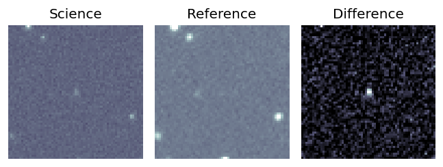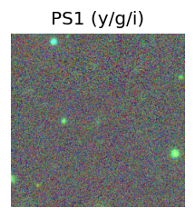 LegacySurvey: 1 sources in 3 arcsec Closest: d = 0.74 arcsec, 147.5 deg (east of north) photoz=0.35 (68% bounds 0.15, 0.82), type=EXP peak abs mag = -21.39 (68% bounds -19.39, -23.66) Consistent with synchrotron, g-r>0!
19. ZTF26aahnjfz (Afterglow?) [Back to Top] [Share] [Trigger Swift] [Fritz ] [Lasair ]RA, Dec: 121.83842, 15.43087 8h 7m21.22s, 15d25m51.12sGalactic (l, b): 207.05339, 23.59911 WARNING: -4.68 deg from ecliptic plane ext(g-r) = 0.029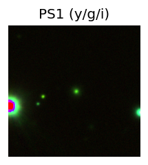 LegacySurvey: 1 sources in 3 arcsec Closest: d = 0.73 arcsec, 226.1 deg (east of north) photoz=0.1 (68% bounds 0.09, 0.11), type=SER peak abs mag = -18.51 (68% bounds -18.3, -18.77) Consistent with synchrotron, g-r>0!
20. ZTF26aahpkqy (Afterglow?) [Back to Top] [Share] [Trigger Swift] [Fritz ] [Lasair ]RA, Dec: 169.76846, 0.87315 11h19m4.43s, 0d52m23.35sGalactic (l, b): 258.91502, 55.64312 WARNING: -3.25 deg from ecliptic plane ext(g-r) = 0.034peak abs mag = -18.66 LegacySurvey: 1 sources in 3 arcsec Closest: d = 1.37 arcsec, 230.4 deg (east of north) photoz=0.12 (68% bounds 0.1, 0.15), type=REX peak abs mag = -19.29 (68% bounds -18.74, -19.81) Consistent with synchrotron, g-r>0!
21. ZTF26aahrisw (FBOT?) [Back to Top] [Share] [Trigger Swift] [Fritz ] [Lasair ]RA, Dec: 129.00566, 11.07129 8h36m1.36s, 11d 4m16.63sGalactic (l, b): 214.64132, 28.19335 ext(g-r) = 0.03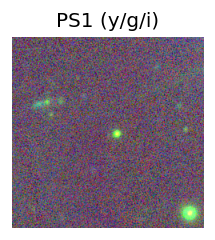 LegacySurvey: 1 sources in 3 arcsec Closest: d = 0.95 arcsec, 189.8 deg (east of north) photoz=0.9 (68% bounds 0.72, 1.06), type=REX peak abs mag = -24.47 (68% bounds -23.89, -24.91)
22. ZTF26aahrjuy (Afterglow?) [Back to Top] [Share] [Trigger Swift] [Fritz ] [Lasair ]RA, Dec: 138.49302, 14.18981 9h13m58.33s, 14d11m23.31sGalactic (l, b): 215.79324, 37.91295 WARNING: -1.76 deg from ecliptic plane ext(g-r) = 0.058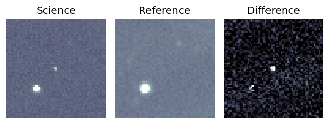
23. ZTF26aahrqri (Afterglow?) [Back to Top] [Share] [Trigger Swift] [Fritz ] [Lasair ]RA, Dec: 142.95195, 10.67232 9h31m48.47s, 10d40m20.37sGalactic (l, b): 222.28077, 40.36863 WARNING: -3.76 deg from ecliptic plane ext(g-r) = 0.032LegacySurvey: 1 sources in 3 arcsec Closest: d = 7.71 arcsec, 242.7 deg (east of north) photoz=0.39 (68% bounds 0.1, 0.6), type=PSF peak abs mag = -22.0 (68% bounds -18.66, -23.11)
24. ZTF26aahtrfj (FBOT?) [Back to Top] [Share] [Trigger Swift] [Fritz ] [Lasair ]RA, Dec: 190.34138, 14.84118 12h41m21.93s, 14d50m28.23sGalactic (l, b): 291.62396, 77.49124 ext(g-r) = 0.035LegacySurvey: 1 sources in 3 arcsec Closest: d = 0.27 arcsec, 196.9 deg (east of north) photoz=0.73 (68% bounds 0.46, 0.81), type=SER peak abs mag = -21.84 (68% bounds -20.64, -22.14)
25. ZTF26aahtydo (Afterglow?) [Back to Top] [Share] [Trigger Swift] [Fritz ] [Lasair ]RA, Dec: 182.08774, 6.19162 12h 8m21.06s, 6d11m29.82sGalactic (l, b): 274.92487, 66.69121 ext(g-r) = 0.016LegacySurvey: 1 sources in 3 arcsec Closest: d = 0.90 arcsec, 38.2 deg (east of north) photoz=0.56 (68% bounds 0.42, 0.67), type=REX peak abs mag = -21.6 (68% bounds -20.86, -22.07) 


 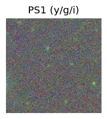
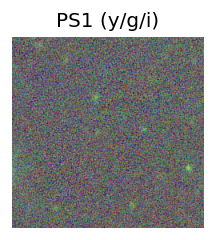


 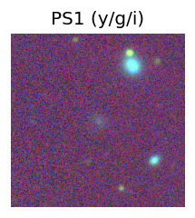
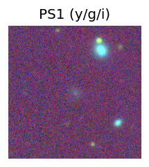


 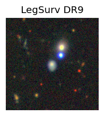
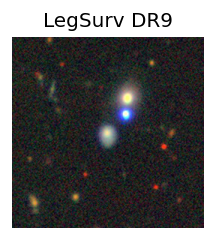
 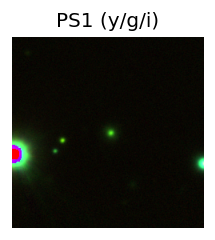
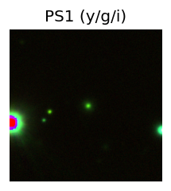


 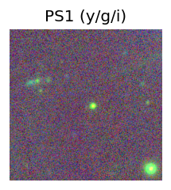
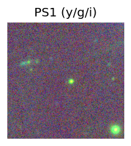